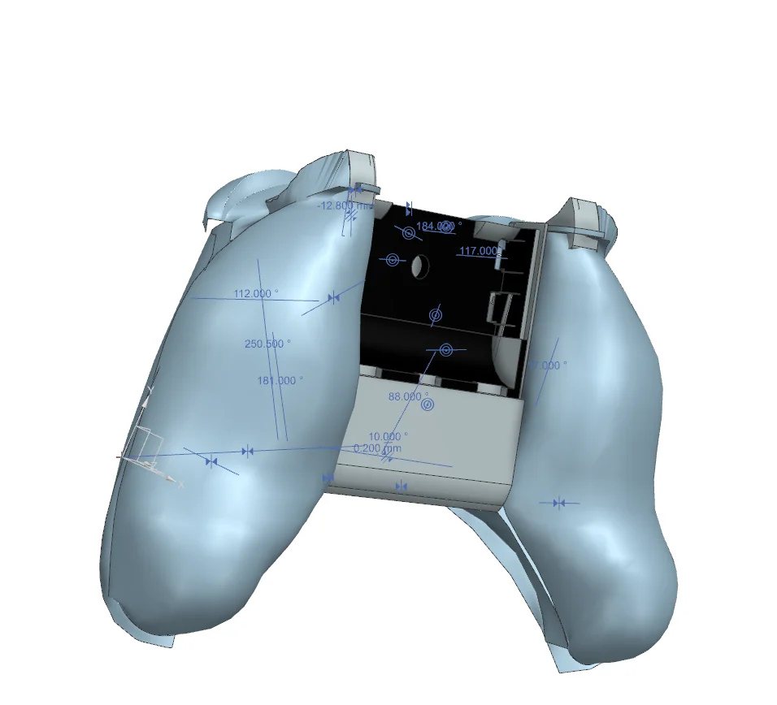
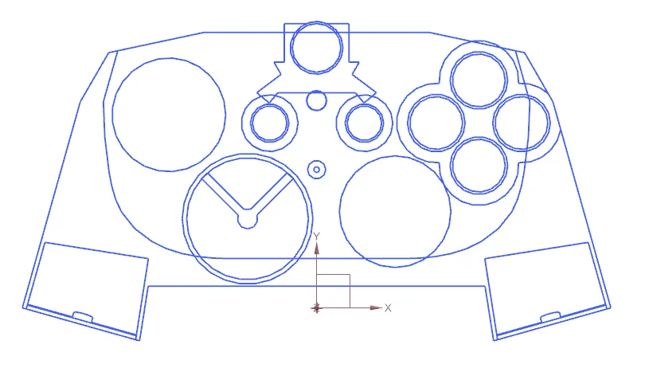
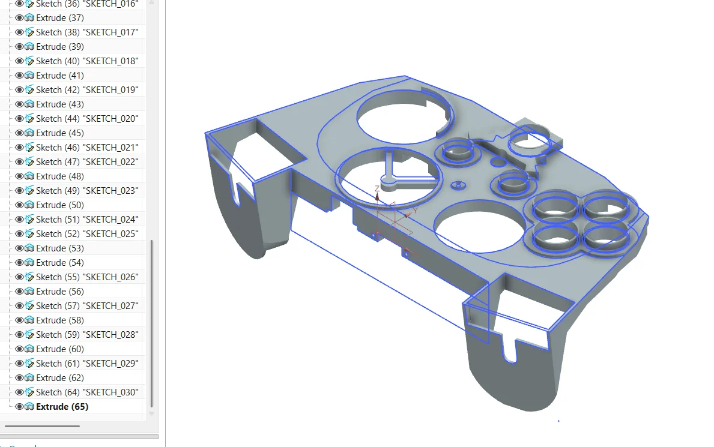
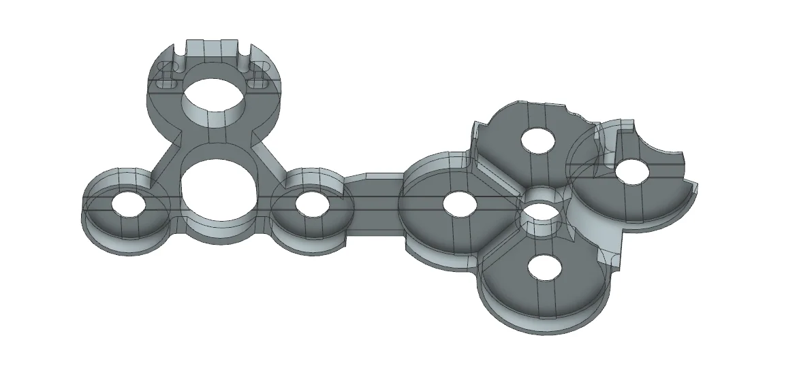
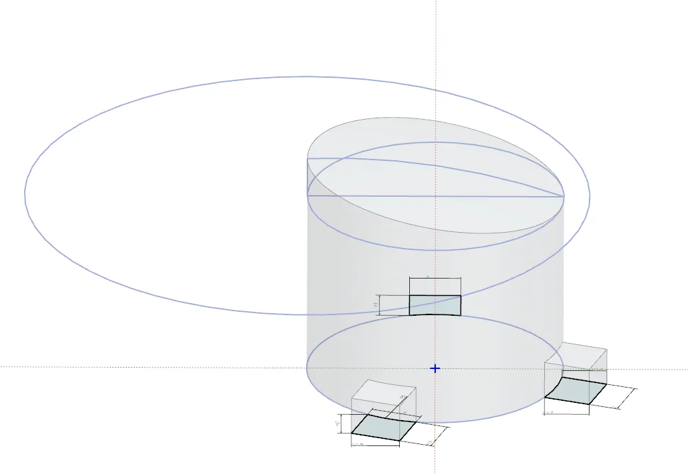
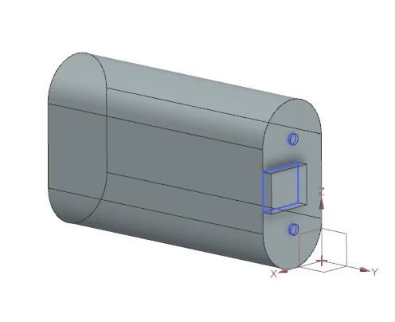
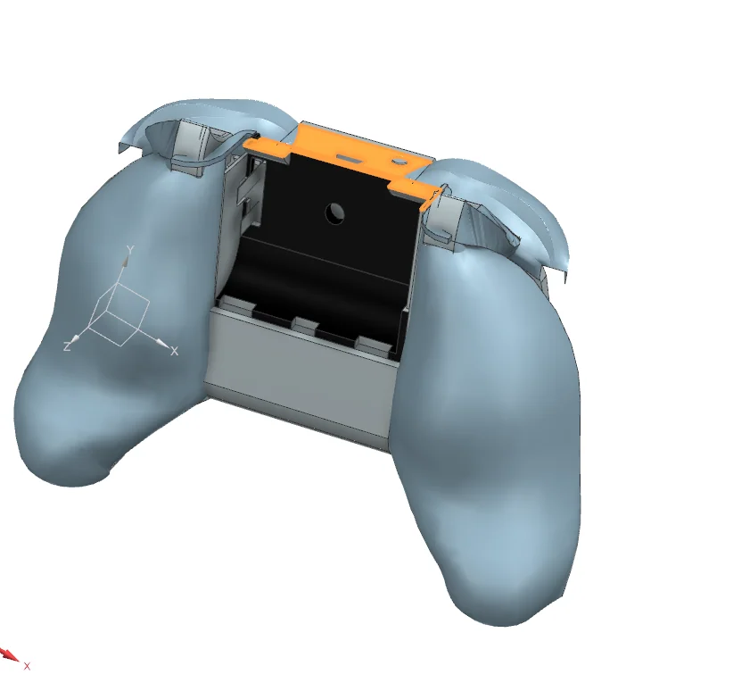
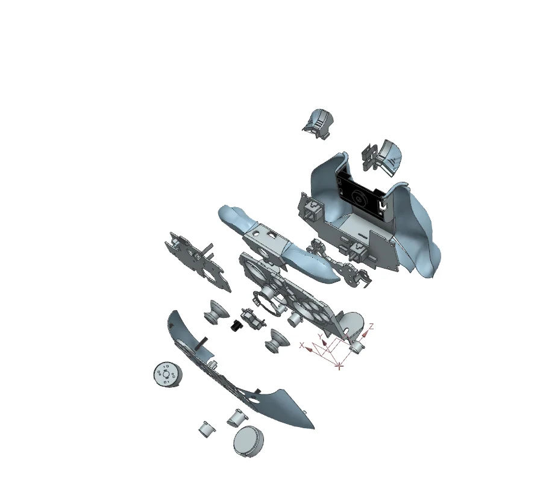
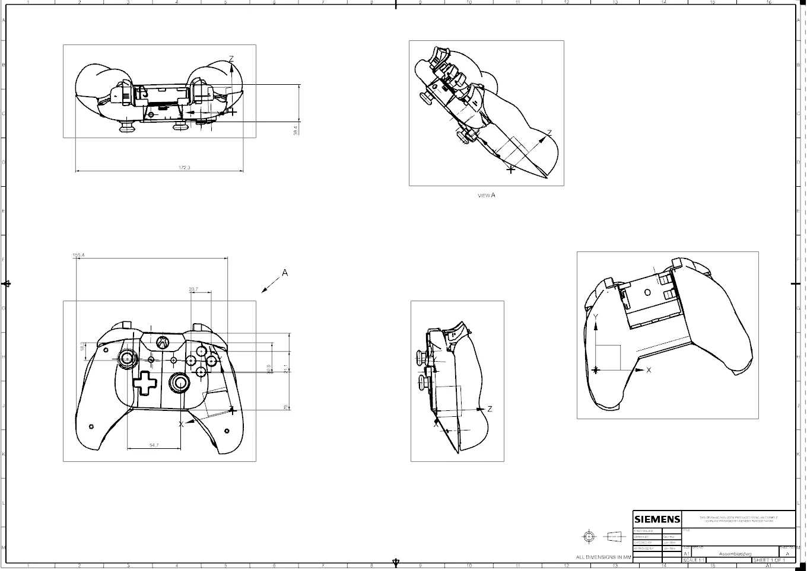
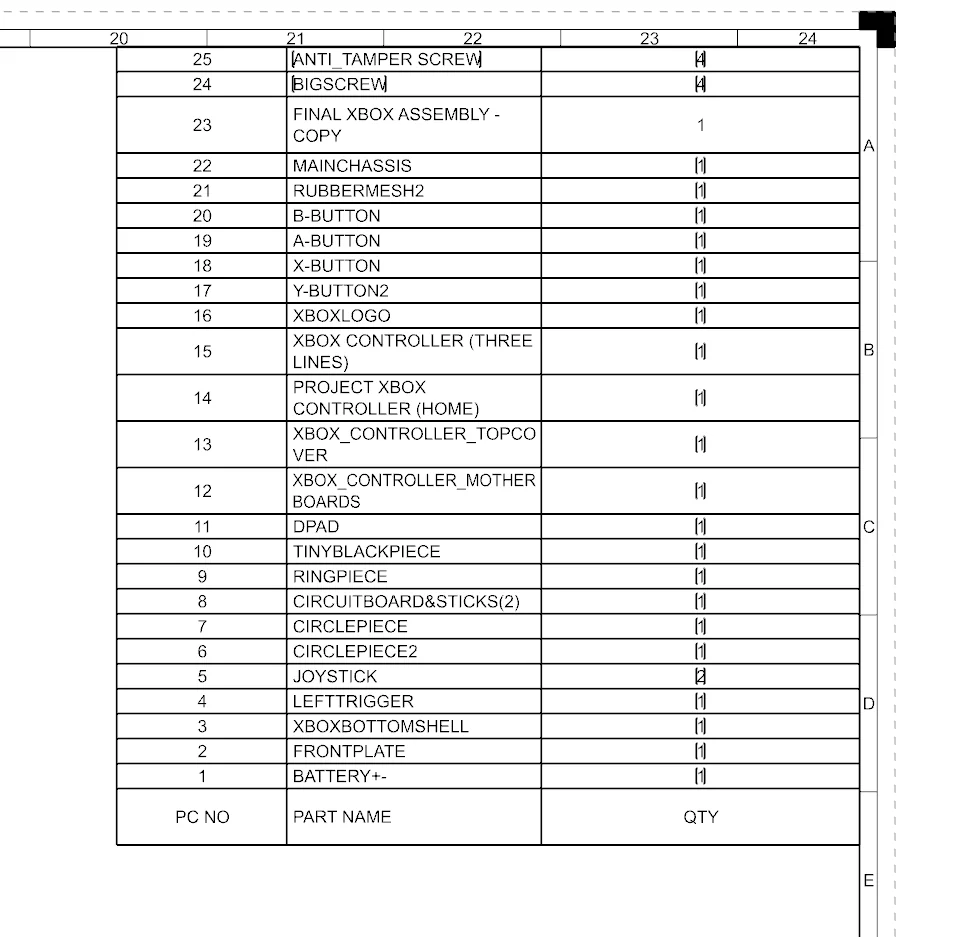

Mechanical Design.
Reverse-engineering an Xbox One controller in Siemens NX.
MECH 1072C · University of Cincinnati · Team project · Spring 2026
27 unique parts. One digital assembly.
Our five-person team disassembled an Xbox One controller, measured its geometry with digital calipers, modeled its components in Siemens NX, and reconstructed the product as a CAD assembly. My primary responsibility was modeling the internal chassis, rubber button membrane, ABXY face buttons, and battery.

Reverse engineering a real consumer product
The assignment was to select a physical product, disassemble it, measure its constituent parts, and recreate the components and assembly in Siemens NX. We selected the Xbox One controller because it combines ergonomically shaped plastic shells, buttons, mechanical mounting features, and electronic packaging into a compact design. Our group documented 27 unique components and measured individual features with digital calipers, recording measurements to 0.01 mm resolution.
This was a collaborative academic project. Different teammates modeled different subsystems, while the overall assembly, technical drawings, exploded view, and bill of materials were completed as team deliverables.
The components I personally modeled
Rather than claiming ownership of the entire controller, the examples below focus on the parts assigned to me and the specific CAD techniques I used.
Internal chassis
I measured the chassis envelope and created the base outline using a sketch and extrusion. I then built the raised central region, applied edge blends, extruded cylindrical supports, formed mounting features, and cut openings for the upper assembly. These features were important for locating and fitting the controller's internal components.


Rubber button membrane
I mapped the circular button positions and their spacing, created the outer profile, and used separate extrusions and Boolean subtractions to shape the supports, hollow cylindrical walls, and openings. The final design represented the flexible rubber interface behind the face buttons.

ABXY buttons
I modeled all four face buttons, starting from a measured circular profile and adding the retaining tabs and supports. For the A button, the report documents a 10 mm starting diameter, separate extrusions for differently sized features, and a revolved profile. The remaining buttons were adapted to their individual geometry rather than treated as identical parts.

Battery model
I modeled the Xbox battery by sketching its end profile, extruding the main body, then using an offset datum plane and secondary sketches to add its terminal details.

Putting the system back together
Once each teammate completed their assigned models, the group combined the components into a full Siemens NX assembly. The report documents positioning parts through concentric, parallel, touching, and angular relationships. This stage required matching measured geometry across independently created parts.


Assembly integration and assembly instructions were documented by teammates; these views represent the group result.
Drawings, exploded view & bill of materials
The team documented the design with dimensioned Siemens NX drawings, an exploded assembly, and a bill of materials (BOM) for the controller components. These documents supported communication, part identification, and reconstruction of the finished model.


Credit: teammate Max Thornton prepared the NX drawings, exploded view, and bill of materials, according to the individual contribution statements in the report.
What the project taught me
This project was practical experience in moving from physical geometry to a functioning digital representation: careful measurement, sketch constraints, feature-based modeling, datum planes, revolves, Boolean operations, and thoughtful fit between components. Modeling the chassis and button interface made the importance of internal geometry, component packaging, and assembly relationships especially clear.
It also required coordinating a shared design across a five-person team and explaining my own modeling decisions in both a technical report and a presentation. The final outcome was a documented digital reconstruction of the Xbox One controller.